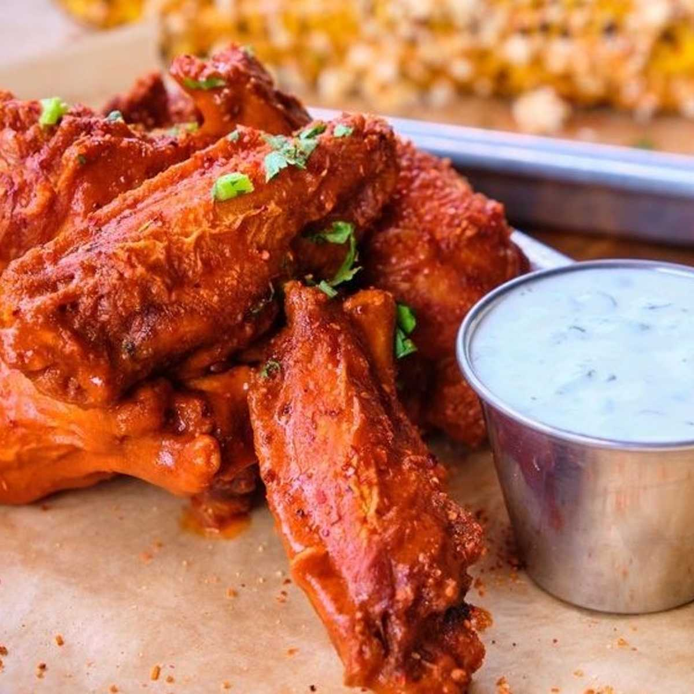

Wings

Hot Wings
Looking for the right amount of spice and juicy wings? You have come to
the right place! These wings will have you raving to everyone you know.
Sided with your choice of blue cheese or ranch will definately set this
dish off. Continue down the page to hear the hype.
Ingridients
- 10 to 15 large raw wings
- 2 Tbls Old Bay
- 1 Tbls Salt
- 1 Tbls Pepper
- 1 lemon
- 1 cup of vegetable oil
- 1/2 cup of Franks Red Hot hot sauce
Cooking Tools
- Cleaning bowl
- Mixing bowl
- Tongs
- Deep frying pan
- Draining bowl (for oil)
Once all the ingridients are gathered you can now start to create this delicious
snack.
Step by Step Instructions
- Place the raw chicken in the cleaning and clean it with water salt and vineagar.
- After cleaning, pour the 1 cup of vegetable oil into your deep frying pan.
- Let the pan heat up to medium low and place the chicken to cook until golden brown.
- Placed cooked chicken in a draining bowl to remove the access oil.
- Once excess oil is gone and chicken as cooled, place them in the mixing bowl.
- Add seasonings to the bowl of cooked wings(Old Bay, salt, and pepper.
- Then add the lemon juice and Franks Red Hot hot sauce in the mixing bowl and mix well.
- Lastly, place your wings on a plate, with a side of blue cheese or ranch.
Now you can enjoy!